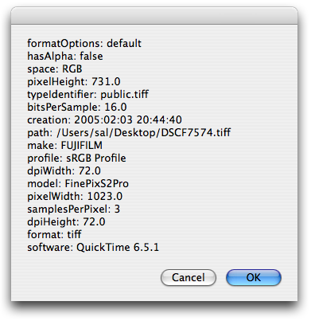

Extracting Metadata
Metadata is information that is embedded in or associated with image files. For example, cameras often include information within each image they produce about the make and model of the camera used, the f-stop used, the exposure time, the color space, and the date the image was taken. This set of metadata is often refered to as the EXIF data (Exchangeable Image File Format). Images in JPEG or TIFF format usually support the inclusion of EXIF data.
A sub-set of this information can be extracted from images using Image Events, as demonstrated in this script:
 A script for displaying the value of various image metadata tags.
A script for displaying the value of various image metadata tags.
set this_file to choose file without invisibles
try
tell application "Image Events"
-- start the Image Events application
launch
-- open the image file
set this_image to open this_file
-- extract the metadata values
tell this_image
repeat with i from 1 to the count of metadata tags
try
set this_tag to metadata tag i
set the tag_name to the name of this_tag
set the tag_value to the value of this_tag
if i is 1 then
set the tag_text to tag_name & ": " & tag_value
else
set the tag_text to the tag_text & return & tag_name & ": " & tag_value
end if
on error
if the tag_name is "profile" then
set the tag_text to the tag_text & return & tag_name & ": " & name of tag_value
end if
end try
end repeat
end tell
-- purge the open image data
close this_image
end tell
display dialog tag_text
on error error_message
display dialog error_message buttons {"Cancel"} default button 1
end try

The metadata tags and values from a chosen image.
Here’s a shorter script that extracts the value for a single metadata tag:
 A script for extracting and displaying the value of a sinlge metadata tag.
A script for extracting and displaying the value of a sinlge metadata tag.
set this_file to choose file without invisibles
try
tell application "Image Events"
-- start the Image Events application
launch
-- open the image file
set this_image to open this_file
-- extract the value for the metadata tag
tell this_image
set the camera_type to the value of metadata tag "model"
end tell
-- purge the open image data
close this_image
end tell
display dialog camera_type
on error error_message
display dialog error_message buttons {"Cancel"} default button 1
end try
Note that support for metadata in Image Events is limited. The values of the metadata tags only be read, they cannot be written. And they do not include other common metadata sets such as IPTC (International Press Telecommunications Council).
However, Mac OS X Tiger introduced a system-wide metadata architecture called Spotlight. It makes it extremely simple to read the metadata of files and to search for related documents, emails, etc. AppleScript can use the Spotlight frameworks to read the combined metadata of any image. It accomplishes this through scripting Spotlight’s built-in command-line tool mdls.
This process is covered in detail in Chapter 29: Scripting the Shell from the official Apple Training book AppleScript 1-2-3.